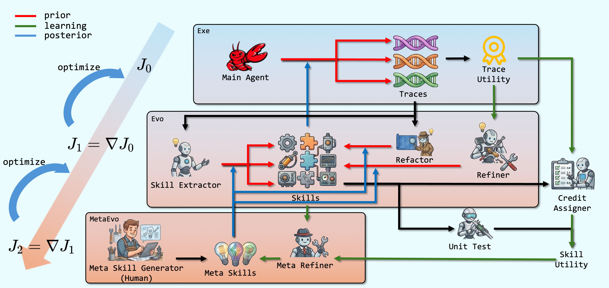

HiSME: Hierarchical Skill Meta-Evolving for Agent Skill Libraries (Tsinghua/Huawei)
TL;DR
- "You Live More Than Once: Towards Hierarchical Skill Meta-Evolving" (arXiv 2605.28390; Xujun Li, Kehan Zheng, et al., Tsinghua + Huawei Foundation Model Dept.) argues that test-time skill evolving is itself a flawed human-designed prior — so HiSME evolves the evolving algorithm too, by distilling meta-skills (rules-of-thumb for the extractor/refactorer/refiner roles) from the observed outcomes of the skills those roles produced.
- Everything is text-space and test-time: the executor (claude-sonnet-4-6) stays frozen, skills are gated by LLM-maintained test bundles and credit assignment, and each role keeps ≤5 meta-skills refreshed from a replay buffer of (artifact, later-evidence) pairs.
- On BFCL-v4 multi-turn, HiSME reaches 0.800 official-valid vs 0.760 for the identical framework without meta-evolving (and 0.747 for SkillX, 0.580 skill-free); on MineDojo it hits 0.856 success while reducing interaction rounds and tokens below the no-skill baseline. Frozen meta-skills transferred into a fresh static run recover most of the gap (0.694 → 0.771).
Why this matters
Skill libraries are becoming the standard answer to "how does a frozen agent improve?" — distill execution traces into reusable text artifacts, retrieve them later. This tracker is full of the first-order version: MSCE converts memory into evidence-gated executable skills, Qwen's skill self-play co-evolves proposer/solver/controller, OpenSpace shares self-evolving skills across agents, and the UNC agent autonomously built a SOTA memory system. But in nearly all of these, the strategy that extracts, tests, and prunes skills is hard-coded. If the extraction prompt has a systematic bias — say, it keeps promoting brittle rules triggered by surface words like "urgent" — the library pays for that defect forever, and maintenance keeps repairing the same failure pattern.
HiSME's question is the obviously-next-but-rarely-asked one: can the skill-evolving framework itself be optimized at test time, with the same machinery? That is a small, concrete instance of recursive self-improvement — a second-order loop stacked on the first-order loop, both operating in text space with no weight updates. It's directly in the lineage of the self-improvement survey's scaffold-improvement branch and the long-horizon survey's Harness × Optimization co-evolution framing: here the harness component being co-evolved is the skill-lifecycle policy. The paper's own limitations section even gestures at third-order evolution. Whether these higher-order loops keep paying off is one of the live questions for self-improving systems, and this is one of the first clean measurements of the second order in isolation.
The core idea
Frame everything as residual optimization. The frozen executor is a flawed prior with residual utility \(\epsilon_{0}\); a skill-evolving algorithm \(\textsc{Evo}_0\) is a posterior optimizer that claws back part of that residual:
where \(J_0\) is expected task utility, \(\textsc{Exe}_S\) is the executor conditioned on skill library \(S\), and \(J_1\) is the utility improvement the evolving algorithm delivers. HiSME's core claim is that the evolving algorithm — designed from human priors — is itself flawed, leaving a second-order residual:
The remedy is the same trick one level up: learn run-time experiences — meta-skills \(M_t\) — that condition the evolving algorithm, and update them periodically:
In the paper's hierarchy: traces are order 0 (the utility target), skills are first-order information about trace utility, and meta-skills are second-order information — rules about which kinds of skill extraction and maintenance decisions tend to produce helpful skills.
How it works

Figure 1 from the paper: red arrows are pre-hoc skill guidance to the executor, blue arrows are posterior evidence from traces to skills, green arrows are learned feedback (meta-skills) to the evolving procedure itself.
First-order loop (skill evolving). Three LLM roles generate and maintain skills for a frozen ReAct executor:
- Extractor — mines single traces for reusable fragments (3 candidates sampled per trace, since single-trace extraction is noisy). Skills come in three semantics, following SkillX: callable functions, workflow frameworks, domain knowledge.
- Refactorer — mines groups of traces/skills for shared structure via an overlap graph: nodes are trace segments, edge weights combine n-gram overlap, embedding similarity, and error-text overlap; high-purity cliques (shared tools, shared precondition failure, shared argument-binding pattern) are abstracted into concise skills.
- Refiner + filter — each skill carries an evidence state \(e_{t}(s)=\{B(s),\,c_{t}(s),\,u_{t}(s)\}\): a test bundle \(B(s)\) of unit/integration cases (short-term: does the skill implement its declared contract?), credit events \(c_t(s)\) from an LLM judging whether the exposed skill helped/harmed/was neutral on real traces (long-term utility), and usage stats \(u_t(s)\). The refiner revises skills whose evidence suggests better scope or triggers, releasing new versions only after the bundle passes; the filter disables a skill when harmful credits \(h_s\ge\tau\) and positive credits fall short of the protection threshold \(\tau_p\) (gate reconstructed from the paper's prose — the rendered inequality is truncated in the HTML).
Second-order loop (meta-evolving). Every role \(r\in\{\textsc{Ext},\textsc{Rfc},\textsc{Rfn}\}\) keeps a replay buffer \(\mathcal{B}^{r}_{t}\) linking each artifact it produced to the evidence that later accumulated on it. Periodically (every 5 tasks), a MetaEvo agent samples the buffer and distills at most 5 rules-of-thumb per role, which are injected into that role's context: \(r_t(\cdot)=r(\cdot;M^{r}_{t})\). The learned rules are strikingly operational rather than generic prompting advice — e.g., "extract parameter contracts only when multiple independent traces confirm the pattern," "don't extract workflow guardrails triggered by sentiment keywords; require verifiable state or API preconditions," each traced back to concrete helpful/harmful credit events in the appendix.
# HiSME core loop (frozen executor, all text-space)
S ← ∅ # skill library
M[r] ← ∅ for r in {Ext, Rfc, Rfn} # ≤5 meta-skills per role
B[r] ← ∅ # per-role replay buffers
for each task batch D_t (maintenance + meta-update every 5 tasks):
for task x in D_t:
skills ← retrieve(S, x) # lexical + embedding + tool/domain + trust
τ ← Executor(x | skills) # frozen ReAct executor
G ← Ext(τ ; M[Ext]) # single-trace candidates (3 samples)
C ← top_cliques(overlap_graph(traces ∪ S))
G ← G ∪ Rfc(C ; M[Rfc]) # cross-trace refactoring
for s in G: build bundle B(s); release s iff bundle passes
credit ← CreditAssigner(τ, exposed skills) # helpful/harmful/neutral
update e(s) = {bundle, credits, usage} for all exposed s
# maintenance
for s in S:
if e(s) suggests scope/trigger fix: s' ← Rfn(s, e(s); M[Rfn])
release s' iff updated bundle passes
if h_s ≥ τ and p_s < τ_p: disable(s)
# meta-evolving (second order)
for r in {Ext, Rfc, Rfn}:
B[r] += {(artifact, evidence) for artifacts produced by r}
M[r] ← MetaEvo(M[r], sample(B[r])) # keep ≤5 rules-of-thumb
Results
Setup: claude-sonnet-4-6 as both executor and all maintenance roles; BFCL-v4 multi-turn (150 train / 50 held-out test, skills frozen at test) and MineDojo with primitive actions and text-only ray perception (30/30). Three runs each. The load-bearing comparison is HiSME vs HiSME-static — identical lifecycle machinery, meta-evolving ablated.
- BFCL-v4: official-valid 0.800 ± .053 (HiSME) vs 0.760 ± .020 (static) vs 0.747 (SkillX) vs 0.647 (AWM) vs 0.580 (no skills). Gains show up in call recall and precision — the library changes trajectory structure, not just prompt bulk.
- MineDojo: success 0.856 ± .019 vs 0.700 (static), 0.733 (SkillX), 0.689 (no skills) — while using fewer executor rounds (40.3 vs 46.8) and fewer total tokens (27.8M vs 27.4M no-skill, vs 39.7M static). Good skills shorten long-horizon episodes.
- Ablations (BFCL): removing the refactorer is catastrophic (−0.24 official-valid) — reusable structure needs cross-trace evidence; removing extractor −0.10, refiner −0.086, credit filter −0.045.
- Meta test (the most interesting table): freeze the meta-skills from a finished HiSME run and hand them to a fresh static run — official-valid jumps 0.694 → 0.771, nearly matching full HiSME, at no extra cost. The learned evolving rules are transferable artifacts, though avg_score doesn't fully transfer (0.814 → 0.802).
- Meta-evolving's overhead is small: total maintenance budget 15.37 MTok vs 15.03 static on BFCL.
How it connects
- MSCE: Converting Agent Memory into Executable Skills — MSCE is the governance story for skills (evidence-gated crystallization); HiSME governs the governor. MSCE's crystallization gates and HiSME's bundle+credit gates are close cousins; HiSME adds the layer that tunes the gating policy itself.
- Qwen Skill Self-Play and OpenSpace — co-evolution of skill producers/consumers via RL and sharing; HiSME gets a co-evolution effect purely in context, no training.
- Survey: Self-Improvement in Modern Agentic Systems and Survey: Long-Horizon Agents as Harness × Optimization Co-Evolution — HiSME is a clean data point for the "scaffold improves the scaffold" branch, and a micro-instance of the C3 (learning across task streams) level.
- Self-Improving Agents Should Evolve Their Benchmarks and Co-Evolving Evaluation Criteria — same second-order instinct applied to evaluation instead of skill maintenance.
- UNC: Agent Autonomously Builds a SOTA Memory System — an agent improving its own harness in one shot; HiSME makes the improvement continual and evidence-driven.
Critical take
The direction is right and the meta-test is genuinely compelling, but the evidence is thinner than the framing. Test sets are tiny (50 and 30 tasks), variance is large (±0.053 on the headline number — the HiSME/static gap on BFCL is roughly one standard deviation), and both benchmarks were driven by a single executor model; whether meta-skills learned under claude-sonnet-4-6 transfer across executors is untested. The whole tower rests on LLM-based credit assignment, which the authors themselves flag: a biased credit judge poisons both the filter and the replay buffer the meta-level learns from — second-order learning amplifies first-order judgment errors rather than correcting them. Meta-skills are also capped at 5 free-text rules per role, which is closer to automated prompt-tuning of three fixed roles than to open-ended evolution of the algorithm's structure; the roles themselves, the 5-task cadence, and the overlap-graph machinery all remain human-designed and static. And note the MineDojo oddity: HiSME-static underperforms Memento there (0.700 vs 0.833), with only full HiSME winning — so the "architectural advantage" claim is benchmark-dependent. Still, "the evolving strategy is a learnable object, and its learned rules transfer to future runs" is a result worth having, and cheap enough that any skill-library system here could bolt it on.
If you remember three things
- Skill evolving is a posterior optimizer on a frozen executor's residual; HiSME shows the optimizer itself has a learnable residual: \(\epsilon_1 = \max_{\textsc{Evo}} J_1(\textsc{Evo}) - J_1(\textsc{Evo}_0) > 0\), and you can capture part of it with ≤5 rules-of-thumb per role, learned from (artifact → later evidence) replay.
- Cross-trace evidence beats single-trace intuition: the overlap-graph refactorer is the single most important component (−0.24 official-valid when removed), echoing MSCE's "positive estimated gain" gating.
- Meta-skills are transferable: frozen rules from one run lift a cold-start static run from 0.694 to 0.771 official-valid — learned process knowledge, not just learned task knowledge, can be shipped between deployments.